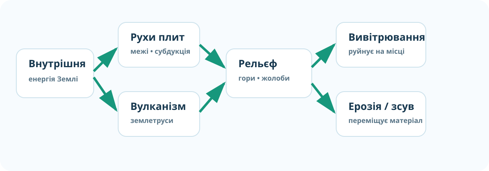
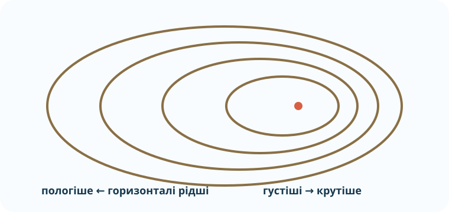

🎯 Як працює ДТР‑2
Спочатку введіть дані. Після цього відкриються 10 завдань. Кожне — 1 бал. Частина завдань перевіряє не пам’ять, а вміння використати доказ. Після завершення ви отримаєте результат і персональний маршрут корекції.
Швидкий атлас доказів
Перед тестом 2 хвилини подивіться на дані. Відповіді не підписані — шукайте закономірності.



1. Будова Землі
Яке твердження найточніше?
2. Межі плит
Дві океанічні плити розходяться. Який набір ознак найбільш імовірний?
3. Землетрус: читаємо дані
Станція A зафіксувала P-хвилю о 10:00:12, S-хвилю — о 10:00:22. Станція B: P — 10:00:18, S — 10:00:42. Яка станція, ймовірно, далі від осередку?
4. Вулканізм і карта
Чому більшість активних вулканів Тихоокеанського «Вогняного кільця» розташована не випадково?
1 бал: є зв’язок із межами літосферних плит/субдукцією та згадано просторову концентрацію.
5. Зовнішні процеси
Після сильних дощів на схилі з’явилися нові тріщини, похилилися стовпи, місцями виступила вода. Найобґрунтованіший висновок:
6. Горизонталі

На якому боці пагорба схил крутіший?
7. Абсолютна й відносна висота
Вершина — 640 м над рівнем моря, підніжжя — 220 м. Відносна висота:
м8. Рельєф дна океану
Яка форма рельєфу найкраще вказує на зону субдукції?
9. Мінерал чи порода?
У зразку видно кварц, польовий шпат і темні зерна. Найкращий висновок:
10. CER — головний висновок
Теза: «Рельєф Землі є результатом взаємодії внутрішніх і зовнішніх процесів». Наведіть один доказ внутрішнього процесу, один — зовнішнього і коротко поясніть, як вони змінюють поверхню.
1 бал: названо коректний внутрішній процес (рухи плит/вулканізм/землетруси) + зовнішній (вивітрювання/ерозія/зсув тощо) і пояснено їх різну роль.
🏠 Домашній наступний крок
Перегляньте свої помилки. Повторіть лише ті параграфи §§14–23, до яких веде ваш корекційний маршрут. Для електронного підручника/курсу використайте платформу «Всеукраїнська школа онлайн».
Відкрити електронний підручник / курс →